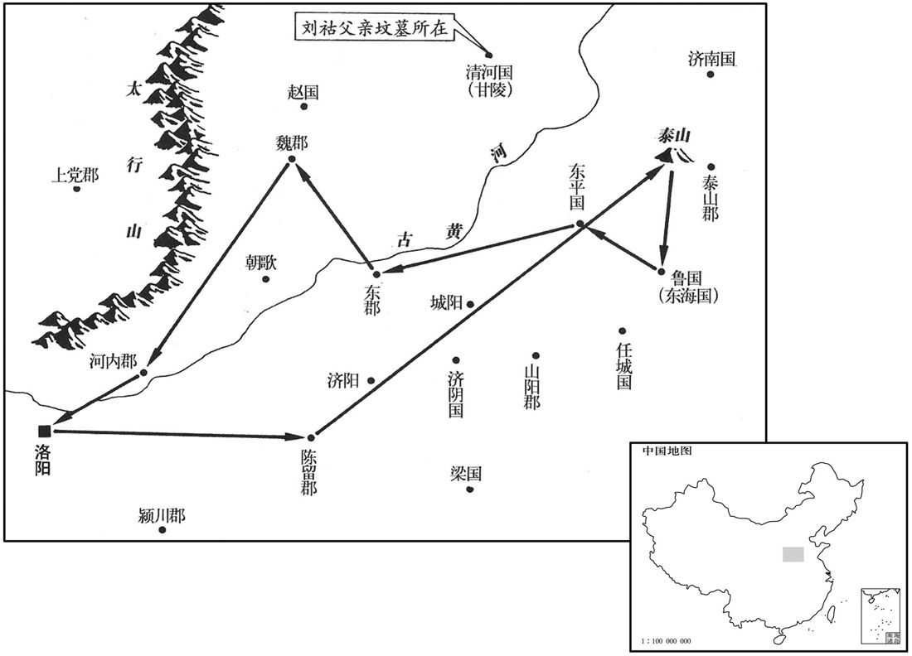

公元124年资治通鉴：本年记事、原文与白话对照
按原书编年位置阅读；追叙和史论不等于本年发生的事件。白话采用所据译本，缺译不以生成译文补齐。
卷50 · 本年记事
公元124年 · 汉孝安皇帝延光三年
三年〔（甲子、一二四）〕
本年事件索引（现代整理）

本年形势与背景参考图
春，正月，班勇至楼兰，以鄯善归附，特加三绶，〔「三绶」，疑当作「王绶」。绶，音受。〕而龟兹王白英犹自疑未下；〔龟兹，音丘慈。〕勇开以恩信，白英乃率姑墨、温宿，自缚诣勇，因发其兵步骑万余人到车师前王庭，击走匈奴伊蠡王于伊和谷，〔蠡，音黎。〕收得前部五千余人，于是前部始复开通；〔复，扶又翻。〕还，屯田柳中。
春季，正月，班勇抵达楼兰。因鄯善王归附汉朝，朝廷特别赐给他三条绶带的印信。然而龟兹王白英仍然独自犹豫不定。班勇用恩德和信义进行开导，白英这才带领姑墨、温宿两国王，将自己捆绑起来，向班勇归降。班勇乘机征调龟兹等国的步骑兵一万余人，前往车师前王国王庭，在伊和谷赶走匈奴伊蠡王，收容车师前王国军队五千余人。于是车师前王国开始重新与汉朝建立联系。班勇返回，在柳中垦田屯戍。
二月，丙子，车驾东巡。辛卯，幸泰山。三月，戊戌，幸鲁；还，幸东平，至东郡，历魏郡、河内而还。〔还，从宣翻，又如字。〕
二月丙子（十三日），安帝到东方巡视。二月辛卯（二十八），临幸泰山。三月戊戌（初五），临幸鲁，归途中临幸东平，后到达东郡，经过魏郡、河内而返回京城。
初，樊丰、周广、谢恽等见杨震连谏不从，无所顾忌，遂诈作诏书，调发司农钱谷、大匠见徒材木，〔调，徒吊翻。见，贤遍翻。〕冬起耱舍、园池、庐观，役费无数。〔观，古玩翻。〕震复上疏曰：「臣备台辅，不能调和阴阳，去年十二月四日，京师地动，其日戊辰；三者皆土，位在中宫，〔贤曰：戊干、辰支，皆士也；并地动，故言三者。考异曰：震传作「十一月四日」。按下文「其日戊辰」，十一月丙申朔，戊辰及十二月四日也。〕此中臣、近官持权用事之象也。臣伏惟陛下以边境未宁，躬自菲薄，官殿垣屋倾倚，枝拄而已。〔贤曰：倚，邪也。拄，音竹柱翻。〕而亲近幸臣，未崇断金，〔贤曰：易系辞曰：二人同心，其利断金。言邪佞之人，不与上同心。近，其靳翻。断，丁乱翻，王肃丁管翻。〕骄溢踰法，多请徒士，盛修第舍，卖弄威福，道路讙哗，地动之变，殆为此发。〔讙，许元翻。为，于伪翻；下同。〕又，冬无宿雪，春节未雨，百僚焦心，而缮修不止，诚致早之征也。惟陛下奋干刚之德，弃骄奢之臣，以承皇天之戒！」震前后所言转切，帝既不平之，而樊丰等皆侧目愤怨，以其名儒，未敢加害。会河间男子赵腾上书指陈得失，帝发怒，则还自敬德。〔贤曰：尚书无逸之辞。还，反也。敬德加谨，以增修其德也。〕今赵腾所坐，激许谤语，为罪与手刃犯法有差，乞为亏除，全腾之命，〔亏，减也。许，讦，居谒翻。〕以诱刍荛舆人之言。」〔贤曰：舆，众也。诗曰：询于刍荛。左氏传曰：听舆人之谋也。诱，音酉。〕帝不听，腾竟伏尸都市。及帝东巡，樊丰等因乘舆在外，竞修第宅，〔乘，绳证翻。〕太尉部掾高舒召大匠令史考校之，〔汉公府诸曹掾，各有分部。贤曰：史谓府史也。余按汉诸官府各有令史。〕得丰等所诈下诏书，具奏，须行还上之，〔须，待也。待车驾行还，上言其事。下，遐稼翻。上，时掌翻。〕丰等惶怖。〔怖，普布翻。〕会太史言星变逆行，遂共谮震云：「自赵腾死后，深用怨怼；〔贤曰：怼，怨怒也，音直类翻。〕且邓氏故吏，有恚恨之心。」〔贤曰：震初邓骘辟之，故曰故吏。恚，于避翻；下同。〕壬戌，车驾还京师，使时太学，〔贤曰：且于太学待吉时而后入也，故曰便时。前书，便时上林延寿门。杜佑曰：便时，取日时之便。〕夜，遣使者策收震太尉印绶；震于是迤门绝宾客。〔柴，塞其门也。〕丰等复恶之，〔复，扶又翻。恶，乌路翻；下同。〕令大鸿胪耿宝奏：「震大臣，不服罪，怀恚望。」有诏，遣归本郡。〔震，弘农华阴人。〕震行至城西夕〔【章：甲十六行本「夕」作「几」；乙十一行本同；孔本同；熊校同。】〕阳亭，〔雒阳城西也。〕及慷慨谓其诸子、门人曰：〔贤曰：慷慨，悲叹。余谓慷慨，不得意而见于辞色也。〕「死者，士之常分。〔分，扶问翻。〕吾蒙恩居上司，疾奸臣狡猾而不能诛，恶嬖女倾乱而不能禁，〔嬖，卑义翻，又必计翻。〕何面见复见日月！〔复，扶又翻；下同。〕身死之日，以杂木为棺，布单被，裁足盖形，勿归耱次，勿设祭祀！」因饮酖而卒。弘农太守移良〔风俗通曰：齐公子雍食吧于移，其后氏焉。〕承樊丰等旨，遣吏于陕县留停震丧，露棺道侧，㻙震诸子代邮行书；〔说文曰：邮，境上行书估也。广雅曰：邮，驿也。此言使震诸子代驿吏传行文书也。陕，失再翻。〕道路皆为陨涕。〔为，于伪翻。〕
起初，樊丰、周广、谢恽等人见杨震接连进谏却未被采纳，因而无所顾忌，后来便伪造诏书，征调大司农的钱粮、大匠的现有徒夫、木材，各自兴建巨宅、林园池塘和亭台楼阁，劳役及费用无法统计。杨震再次上书说：“我身在三公之位，未能调和阴阳。去年十二月四日，京城发生地震，那一天是‘戊辰’日，地与戊、辰三者都属‘土’，而地震的位置在中宫，这是宦官幸臣掌权用事的征象。我想到，陛下由于边境平静，自己十分俭省，皇宫的墙垣殿堂倾斜，只用支柱撑起而已。然而那些亲近的宠臣，却不能尊崇与陛下同心的原则，他们骄傲奢侈超过法律的限制，大量征调役夫，大修宅第，作威作福，致使行人在路上喧哗，地震的灾变，恐怕就是为此而发。还有，去冬无积雪，春天未下雨，百官感到心焦，但修缮未停止，这诚然是导致干旱的征兆。愿陛下振奋帝王的阳刚之德，抛弃那些骄傲奢侈之臣，以回报上天的警告！”杨震前后的言论由温和转为激烈，安帝已感到不满，而樊丰等人全都对杨震侧目而视，十分愤恨。但由于杨震是知名的儒者，他们未敢加害于他。恰在此时，河间男子赵腾上书分析批评朝廷得失，安帝发怒，于是将赵腾逮捕，送到诏狱审问，以欺骗主上、大逆不道定罪。杨震上书营救赵腾，说：“我听说殷代、周代的圣明君王，受到小人的抱怨和诟骂后，反而自我警戒，进一步修养品德。如今赵腾受到指控的原因，是用激烈的言辞进行诽谤，罪行与持刀杀人犯法有所不同。我请求为赵腾减刑，保全他的性命，以劝诱草野民众为国进言。”安帝不听。赵腾终于被处死，横尸于都市街头。及至安帝去东方巡视，樊丰等因皇上在外而竞相大修宅第。太尉部掾高舒叫来大匠令史询问核查，得到了樊丰等人伪造发下的诏书。杨震将全部情况写成奏书，准备等安帝回京后呈上，樊丰等人大为惶恐。这时，恰好太史报告说星象发生变化，出现了逆行现象。于是樊丰等人便一同诋毁杨震说：“自从赵腾死后，杨震深为不满，而且他是邓氏家族的旧人，有怨恨之心。”三月壬戌（二十九日），安帝回到京城洛阳，临时在太学休息。当夜，派使者颁策，收回杨震的太尉印信。于是杨震紧闭门户，不再会见宾客。樊丰等人又感到厌恶，指使大鸿胪耿宝上奏说：“杨震本是大臣，竟不服罪而心怀怨恨。”安帝下诏，将杨震遣回原郡。杨震来到洛阳城西的夕阳亭，便满怀慷慨地对他的儿子、门徒们说：“死亡，乃是士的平常遭遇。我蒙受皇恩而身居高位，痛恨奸臣狡诈，却不能进行惩罚；痛恨淫妇作乱，却不能予以禁止，还有什么面目再见日月！我死以后，要以杂木作棺材，用单被包裹，仅够盖住身体即可，不要归葬祖坟，不要祭祀！”于是服毒而死。弘农郡太守移良遵照樊丰等人的意思，派官吏在陕县留住杨震的丧车，使棺木暴露在大道之旁，并谪罚杨震的儿子们为驿站传递文书。路上的行人都为他们洒泪。
太仆征羌侯来历曰：〔征羌侯国，属汝南郡。光武以历曾祖歙有平羌、陇之功，改汝南当乡县为征羌国以封之。贤曰：征羌故城，在今豫州郾城县东南。〕「耿宝托元舅之亲，荣宠过厚，不念报过厚，不念报国恩，而倾侧奸臣，伤害忠良，其天祸亦将至矣。」历，邱之曾孙也。〔歙，许及翻。〕
太仆、征羌侯来历说：“耿宝是圣上的嫡亲舅父，荣耀和恩宠过分，但却不想着报效国恩，反而倾向奸臣，伤害忠良，上天给他的灾祸也快要来临了。”来历是来歙的曾孙。
夏，四月，乙丑，车驾入宫。
夏季，四月乙丑（初二），安帝入宫。
戊辰，以光禄勋冯石为太尉。
戊辰（初五），将光禄勋冯石任命为太尉。
南单于檀死，弟拔立，为乌稽侯尸逐鞮单于。〔鞮，于奚翻。〕时鲜卑数寇边，〔数，所角翻，下同。〕度辽将军耿夔与温禺犊王呼尤徽将新降者连年出塞击之，还使屯列冲要。〔冲要者，当敌之冲，边之要地也。贤曰：还令新降者屯列冲要。降，户江翻。〕耿夔征发烦剧，新降者皆怨恨，大人阿族等遂反，〔阿族者，新降一部之大人也。〕胁呼尤徽欲与俱去。呼尤徽曰：「我老矣，受汉家恩，宁死，不能相随！」众欲杀之，有救者，得免。阿族等将其众亡去。中郎将马翼与胡骑追击，破之，斩获殆尽。〔贤曰：殆，近也，欲死尽，所余无几。〕
南匈奴单于檀去世，他的弟弟拔继位，此即乌稽侯尸逐单于。当时，鲜卑屡次侵犯边境，度辽将军耿夔与南匈奴温禺犊王呼尤徽率领新归降的部落连年出塞作战，返回后，则让他们到各要塞驻守。耿夔的征调频繁而辛苦，新归降的人都十分怨恨，其首领阿族等人于是反叛，胁迫呼尤徽，要呼尤徽与他们一同离去。呼尤徽说：“我老了，身受汉朝之恩，宁可死，也不能跟随你们！”阿族等要把他杀掉，因有人相救，才得免一死。阿族等便率领部众逃走。中郎将马翼率胡人骑兵进行追击，打败叛军，叛变者几乎全部被斩杀、俘获。
日南徼外蛮夷内属。〔徼，吉吊翻。〕
日南郡边境外的蛮夷之人归附汉朝。
六月，鲜卑寇玄菟。
六月，鲜卑军侵犯玄菟郡。
庚午，阆中山崩。〔阆中县，属巴郡。贤曰：临阆中水，因以为名，今降州县。宋白曰：「阆水纡曲，经其三面，县居其中，取以名之。〕
六月庚午（初八），阆中县发生山崩。
秋，七〔【章：甲十六行本「七」作「八」；乙十一行本同，张校同，云无注本亦作「七」。】〕月，辛巳，以大鸿胪耿宝为大将军。
秋季，七月辛巳（疑误），将大鸿胪耿宝任命为大将军。
王圣、江京、樊丰等谮太子乳母王男、厨监邴吉等，杀之，〔厨监，主饮食。〕家属徙比景；太子思男、吉，数为叹息。〔为，于伪翻。〕京、丰惧有后害，乃与阎后妄造虚无，构谗太子及东宫官属。帝怒，召公卿公下，议废太子。耿七承旨，皆以为当废。太仆来历与太常桓焉、廷尉犍为张皓议曰：〔犍，居言翻。〕「经说，年未满十五，过恶不在其身；且男、吉之谋，太子容有不知；宜选忠良保傅，辅以礼义。废置事重，此诚圣恩所宜宿留！」〔贤曰：宿留，犹停留也；音秀溜。〕帝不从。焉，郁之子也。〔郁，桓荣之子。〕张皓退，复上书曰：「昔贼臣江充造构谗逆，倾覆戾园，孝武久乃觉寤，虽追前失，悔之何及。〔事见二十三卷武帝征和二年、三年。〕今皇太子方十岁，未习保傅之教，可遽责乎！」书奏，不省。〔省，悉景翻。〕九月，丁酉，废皇太子保为济阴王，居于德阳殿西锺下。〔汉官仪曰：崇玄门内德阳殿也。按帝纪：德阳殿在北宫掖庭中。蔡质汉仪曰：正月旦，天子幸德阳殿，临轩，公、卿、将、大夫、百宫各陪朝贺，蛮、貊、胡、羌朝贡毕见，属郡计吏皆觐，宗室诸刘杂会。又曰：德阳殿，周旋容万人，陛高二丈，皆文石作坛，激沼水于殿下，天子正旦、节会朝百僚于此。济，子礼翻。〕来历乃要结光禄勋祋讽、宗正刘玮、将作大匠薛皓、侍中闾丘弘、〔闾丘，复姓；左传齐有闾丘婴。〕陈光、赵代、施延、太中大夫九江朱伥等十余人，〔要，一遥翻。祋，丁外翻，又丁活翻。伥，丑羊翻。〕俱诣鸿都门证太子无过。帝与左右患之，〔左右，近习也。〕乃使中常侍奉诏胁群臣曰：「父子一体，天性自然；〔孟子曰：父子之道，天性也。〕以义割恩，为天下也。〔为，于伪翻。〕历、讽等不识大典，而与群小共为讙哗，外见忠直〔见，贤遍翻。〕而内希后翻，饰邪违义，岂事君之礼！朝廷广开言〔【章：甲十六行本「言」下有「事之」二字；乙十一行本同；孔本同；张校同。】〕路，故且一切假贷；若怀迷不反，当显明刑书。」谏者莫不失色。薛皓先顿首曰：「固宜如明诏。」历怫然，〔贤曰：字林：怫，郁也，音扶勿翻。余谓怫然，愤郁之见于色者。〕廷诘皓曰：「属通谏何言，而今复背之﹖〔贤曰：属，近也。通，犹共也。近者共谏，何乃相背也﹖属，之欲翻。复，扶又翻。背，蒲妹翻。〕大臣乘朝车，处国事，固得辗转若此乎！」〔贤曰：辗转不也。诗曰：辗转反侧。处，昌吕翻。辗，音展。〕乃各稍自引起。历独守阙，连日不肯去。帝大怒，尚书令陈忠与诸尚书遂共劾奏历等，帝乃免历兄弟宫，削国租，〔削其征羌国租也。劾，户概翻，又户得翻。〕黜历母武安公主不得会见。〔武安公主，显宗女也。武安县，属魏郡。见，贤遍翻。〕
王圣、江京、樊丰等人诋毁太子的奶娘王男和厨监邴吉等人。王男等被杀，家属被流放到比景。太子刘保思念王男和邴吉，屡屡为此叹息。江京、樊丰怕有后患，便与阎皇后凭空妄造证据，罗织罪名诬陷太子和太子宫的官员。安帝发怒，召集三公九卿及以下群臣，讨论废黜太子。耿宝等人秉承旨意，一致认为应当废黜。太仆来历、太常桓焉、廷尉犍为人张皓提出异议说：“经典说，年龄不到十五岁的人，过失与罪恶不由自身负责。况且王男、邴吉的奸谋，太子或许并不知晓，应当为他挑选忠良之臣做保傅，用礼义进行辅佐。废黜太子之事重大，这实在是圣恩所应留驻之处！”安帝不听。桓焉是桓郁之子。张皓退下，又上书说：“从前奸臣江充捏造证据，进行诬陷，使戾太子遇祸，武帝很久以后才觉悟过来，尽管追补从前的过失，但后悔又怎么来得及！如今皇太子年方十岁，没有受过保傅的教育，能够骤然责备他吗？”奏书呈上，安帝置之不理。九月丁酉（初七），将皇太子刘保废黜，贬为济阴王，居住在德阳殿西侧钟楼下。于是来历约集光禄勋讽、宗正刘玮、将作大匠薛皓、侍中闾丘弘、陈光、赵代、施延、太中大夫九江人朱伥等十余人，一同到鸿都门谏诤，说太子没有过失。安帝和他的左右亲信感到不安，便让中常侍用诏命威胁群臣说：“父子一体，本是天性，以大义割断亲情，乃是为了天下。来历、讽等不识大节，与众小人一同鼓噪喧哗，表面上看是忠诚直正，而内心却是在希求以后的好处。掩饰邪念，违背正义，这难道是事奉君王之礼！朝廷广开言路，所以姑且全部宽恕，倘若执迷不返，就要显示刑法的威严。”劝谏的人无不大惊失色。薛皓首先叩头道：“我们自然要服从诏命。”来历愤然，当廷诘问薛皓说：“刚才一道进谏时说的是什么话？而现在又背叛它！大臣乘坐朝廷之车，处理国家的大事，原本可以这样反复不定吗？”于是进谏的官员们逐渐各自起身退下。来历独自一人，守在鸿都门下，一连几天不肯离去。安帝大怒，尚书令陈忠和各位尚书便一同上书弹劾来历等人。于是安帝将来历兄弟免官，削减来历的封国赋税收入，贬黜来历的母亲武安公主，不许她入宫晋见。
陇西郡始还狄道。〔永初五年，陇西徙襄武。〕
陇西郡官府开始迁回狄道。
烧当羌豪麻奴死，弟犀苦立。
羌人烧当部落首领麻奴去世，他的弟弟犀苦继位。
庚申晦，日有食之。
庚申晦（三十日），出现日食。
冬，十月，上行幸长安；十一月，乙丑，还雒阳。
冬季，十月，安帝出行，临幸长安。十一月乙丑（初六），返回洛阳。
是岁，京师及诸郡国二十三地震，三十六大水、雨雹。〔雨，于具翻。〕
本年，京城洛阳与二十三个郡和封国发生地震，有三十六个郡和封国发大水、下冰雹。